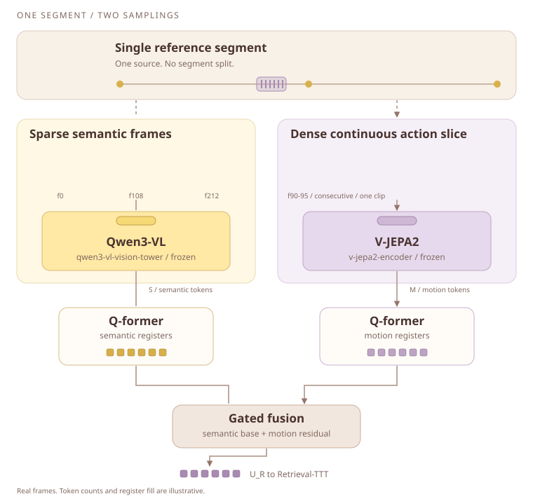
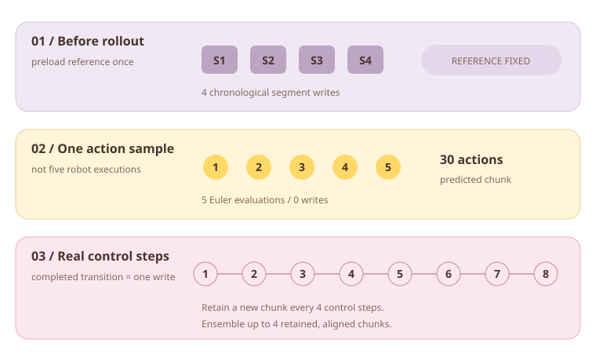

01 / MOTIVATION
The reference is not the reality.
A procedure is worth remembering.
So is the part that actually happened.
THE COMPLETE RESEARCH FILM
From a demonstration to a coherent action.
Intent stays protected.
Progress keeps updating.
Actions read both, in order.
Transcript, downloads, and media sources
A complete research film with locally generated neural English narration, conversational phrasing, English subtitles timed to each spoken passage, recorded human demonstrations, recorded simulated policy executions, and original SVG animation. No robot behavior is generated. The current single-segment design is explicitly separated from the historical 240k experiment. Diagram tokens and weights are illustrative, not recorded activations.
02 / METHOD
Two memories.
One coherent action.
Store what should happen. Update what actually happened.
Read them in that order.
Retrieval-TTTDemonstration-intent memory. Preloaded before rollout, then protected.
Execution-TTTInteraction-progress memory. Written only after real transitions complete.
Now
Drag the timeline to inspect · Player keys: Space play / pause · ← → step · F focus · Esc close
Follow the small squares: sampled image regions become illustrative tokens, K/V tokens update the left or right fast-weight learner, and action-side Q reads reference then progress. The right matrix becomes more pink as completed writes accumulate; the left stays purple and protected. Tint is not measured capacity or importance.
Conceptual illustration, not recorded inference. Memory summaries are explanatory annotations, not model-generated text. The diagram keeps both memory footprints fixed.
01Inside an Action-DiT blockOne action stream. Two reads. A deliberate order.
The second memory refines a representation, not the first memory.

02Cross-Memorization: who writes, who reads?Context K/V writes. Action-side Q only reads.
Store context in weights. Query it from a different stream.

03Encoding, timing, and the 240k evidence boundaryTwo visual branches. Three clocks. A clearly scoped result.
One reference segment. Sparse semantics, dense continuous motion.


Historical 240k protocol: five denoising evaluations are not five executions.


Architecture is not checkpoint provenance.
The reported human-reference Full50 run used normalized-time selection within four chronological segments. Do not infer that the checkpoint exercised every later H-GEC revision.
- Historical segments (240k)
- 4
- Frames per segment
- 12 semantic / 16 temporal
- Reference registers / segment
- 32
- Progress registers / transition
- 16
Video fallback and editable SVG


03 / EXPERIMENTS / BENCHMARKS
The benchmark, without the blur.
Human demonstration context. 240,000 updates. All 50 tasks.
1,692 / 2,000 trials
50 tasks × 4 levels × 10 trials
Nine group means lead under this post-hoc grouping. Not every task or every level leads. Polygon area is not success rate.
Evaluation protocol and chart guide
Full50 evaluates 50 tasks at four scene levels, with ten trials per task and level. The released 240,000-update checkpoint succeeds in 1,692 of 2,000 trials (84.6%). ACT and DP score 74.9% and 64.1%.
L0: same scene. L1: new positions. L2: new appearance. L3: new object function. The nested-corpus evaluations below separately report Seen and Unseen tasks.
Each chart group averages task success rates. The relative view divides by the best method in that group. Overall success weights all 50 tasks equally. The nine chart groups and five appendix reporting groups provide two views of the same task-level values.
All 50 tasks and the paper's five reporting groups
Best AvgGold + bold marks the best model in Avg only, for each task and summary row. All ties are highlighted.
Download exact data (JSON)THE COMPLETE RELEASE / FIVE CHECKPOINTS
Every task. Every level. Every trial.
Browse 360 task-level results and 3,600 episode records. The GitHub result package also includes paper baselines, ablations, real-world experiments and inference measurements.
| Checkpoint | Updates | Reference | Seen | Unseen |
|---|---|---|---|---|
| RoboDemo-c15 | 90,000 | Human | 89.5 | 0.0 |
| RoboDemo-c30 | 160,000 | Human | 94.0 | 0.5 |
| RoboDemo-c45 | 260,000 | Human | 88.5 | 11.5 |
| RoboDemo-c15-wo | 100,000 | Retrieved robot | 90.0 | 0.0 |
C15-wo uses task-matched retrieved robot references. Its Unseen tasks are held out from policy training; robot references come from the benchmark training bank.
04 / EXPERIMENTS / REPRESENTATIONS
Every point has a story.
And a source video.
Explore the measured representation, not an artist's impression of it.
Hover to preview. Click to lock. Arrow keys to inspect adjacent samples. On mobile, tap any point. Only the selected sample and its manifest-defined pair are loaded.
What this does and does not establish
The 309 human videos comprise five tasks with 57, 59, 67, 65, and 61 samples. RGB appearance is a control representation, not a no-TTT model or an untrained model. Both representations can separate tasks. Each side is globally fitted independently: 2D positions and inter-cluster distances are not directly comparable between panels.
Fast-weight features are full parameter updates from layers 1, 19, and 36 (3,161,088 coordinates), not all 36 layers. Task, object, and scene are confounded. Task clusters alone establish neither pure action semantics nor a causal TTT benefit.
The cross-embodiment study has 10 human and 10 robot demonstrations per task: 100 total. Human-to-robot retrieval is 60%, robot-to-human 22%; task-block permutation p=0.0833. Stable general cross-embodiment alignment is not established. The 40-point view selects pour-kettle/open-box coordinates from the full 100-point fit without refitting or alignment. Dataset robot videos are not policy rollouts or time-aligned copies of human motion.
Projection parameters and checkpoint
RoboDemo-full50 / 240,000 updates
Unit-norm features; FP64 Gram eigenspace. Exact t-SNE uses random initialization, learning rate 50, early exaggeration 12, seed 240000, maximum 2,000 iterations. Labels are used only for display. Inference used BF16 autocast; FP32 saved arrays do not imply end-to-end FP32 inference.
05 / EXPERIMENTS / RECORDED EXECUTION
Watch the input.
Inspect the outcome.
Selected qualitative cases, with the full ending left in.
All completed conditions, including counterexamples
| Task | Correct | Static | Reverse | Mismatch |
|---|---|---|---|---|
| Pour | Success | Success | Success | Never succeeds |
| Stir | Success | Success | Success | Final success |
| Fold | Success | Success | Success | First success 365; final failure 500 |
| Selected total | 3/3 | 3/3 | 3/3 | 1/3 endpoint |
Six selected L0 cases: with demonstration 6/6, without demonstration 0/6. This is not an aggregate benchmark ablation. Sensitivity to removing the reference does not prove use of every fine-grained motion cue. Static and reverse successes do not support the necessity of full temporal order. Mismatch keeps the original target language and semantic metadata: it is a conflicting-input study, not arbitrary goal switching.
Synchronization and provenance
Robot comparisons share the recorded control-step clock: 501 encoded frames at 20 fps, steps 0–500, final state at encoded time 25.00 s. Human duration is optionally linearly mapped to that playback clock; the displayed multiplier is not semantic phase alignment. No independent looping is used. The paper's nominal 30-Hz time base is distinct from the legacy 20-fps media encoding. Playback FPS, playback speed, and encoded time are not inference latency or verified wall-clock control frequency.
HD simulation replays reproduce saved model-action trajectories. They are not physical-robot experiments. Stage chips are manual descriptions, not measured phase boundaries, robot trajectories, joint annotations, or attention maps.
Recorded-case data (JSON)RETRIEVAL / A SEPARATE PIECE OF EVIDENCE
A retrieved reference.
Not a reported rollout.
Retrieval example / policy rollout not reported. Both videos are dataset demonstrations. A compatible video is not evidence of end-to-end policy success.
06 / OPEN RESOURCES
Explore the results.
Run the models.
Architecture, evaluation code, environments, five checkpoints and complete numerical tables are available. Training code and launch recipes are planned for the next release.
Performance is strongest on Seen tasks. The published Unseen results are included alongside all Seen results, and the qualitative examples above are selected recorded cases.
RoboDemo: Reconciling Demonstration Intent and Execution Progress for Long-Horizon Manipulation
Anonymous manuscript under review. Start with the evaluation guide, or browse the complete numerical results.
Anonymous citation
@misc{anonymous2027robodemo,
title = {RoboDemo: Reconciling Demonstration Intent and Execution
Progress for Long-Horizon Manipulation},
author = {Anonymous Authors},
year = {2027},
note = {Manuscript under review}
}Credits and media disclosure
Original website and SVG implementation. Warm gold / rose / lavender / brown palette reference: PILOT. Interaction references: Long-WAM and RoboTTT project pages; no NVIDIA code, videos, brand marks, or proprietary fonts were reused. Space Grotesk and Source Sans 3 are locally hosted under the SIL Open Font License; licenses are included. The main English film uses locally synthesized Kokoro-82M narration; earlier films use generic installed macOS voices. All narration is synthetic, not a human recording or a cloned person. Recorded examples and illustrative animations are explicitly distinguished. Media retain their respective rights; public viewing does not grant a blanket redistribution license.
Space Grotesk license · Source Sans 3 license